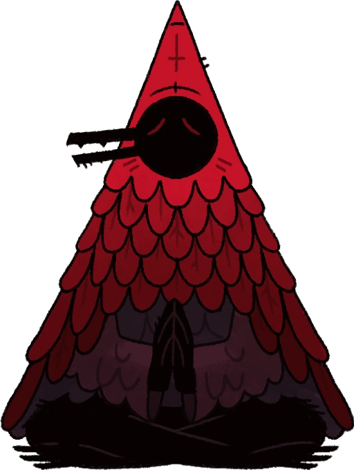
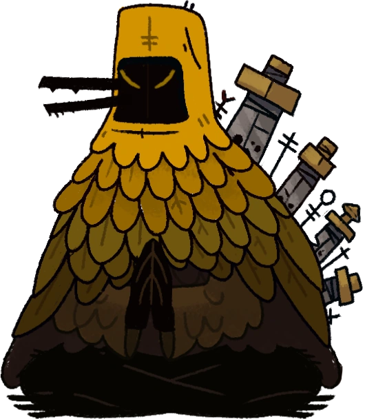
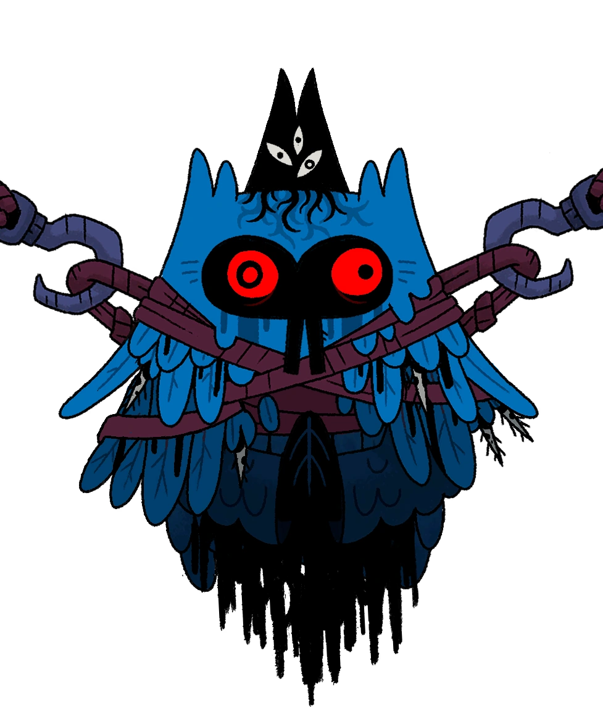

The Three Siblings
Tny story of who they has been lost to the wind. Questions of if they gave up their godhood in exchange for their lives, but somehow escaped with their powers, is left unanswered. They seem to wait for one, a breaker of chains if you will, to aid them on their quest. While the three are not together, one having fallen to her own insanity, they still seem to have a story that they must aid, one yet to come.

Clauneck
The first you may meet along your journey is a calm, wise teller of the future. Donned in a red hood that bleeds into brilliant red feathers. He brilliantly stands out against the darkness of the biomes he visits. He, through his tarot cards, can give forth powers to bless those who come to his mystic camp. You may find him sitting in his tent, seemingly at peace. He will show two blessings, but you may only take one, so choose wisely.

Kudaai
A weapons maker, you will see him in his warm forge, where he gifts werry travelers a stronger weapon or a powerful spell. Like his brother, he is grabbed in a hood matching his amber feathers. However, he seems to be stabbed in the back with four swords, each smaller than the last, he seems to ignore them. While he may be more intense than his brother, he still highly respects those who are honorable that come through his forge. While he may not tell the future, he waits for someone to come. The one called “Promised Liberator”.

Chemach
A relic of the old faith in herself, she is bound in and suspended; her shot-open eyes show her insanity. While she may seem to be contained, she retains the power to travel from place to place with her “followers,”; her followers being little stuffed figures with meat inside, perhaps in an attempt to bless them with life. Spiraling in her own insanity. Unlike her two brothers, she doesn't wear a hood, instead, on top of her blue feathered head lays the Eldritch Crown, which is burrowed into her head, which may have contributed to her insanity. Her powers twisted into gifts of relics that can give extra power to it barer, some are very fragile so they may need to be careful when to use it. It is unclear if her crown is a punishment from the bishops (either for standing against them or refusing to give up her crown), a curse from the crown himself, or even a sacrifice to prevent the crown from being taken. However the case, she will see you soon.